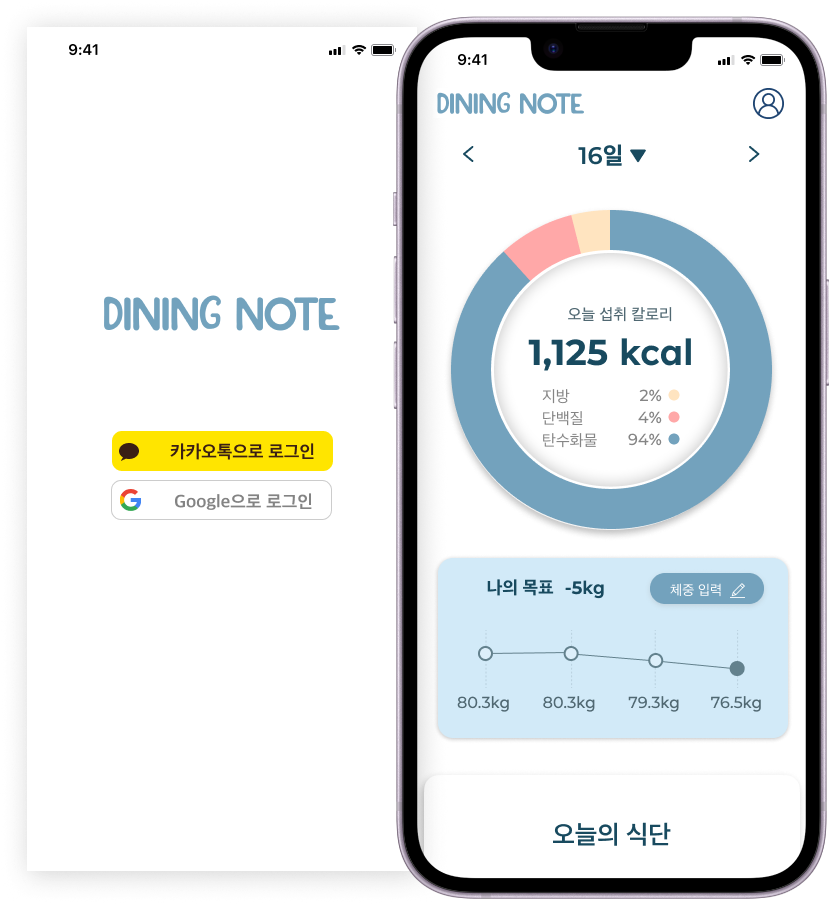

PROJECT3
DINING NOTE
- Project 식단관리 앱 '다이닝노트' UI / UX 디자인
- Type TeamProject
집보내조
(이예지 · 이성우 · 조연희 · 고은지) - Skill Figma, Illustrator, Photoshop
- period 2023. 04 .24 ~ 2023. 06. 01

다이닝 노트만의 심플한 디자인을 유지하되,
사용자가 필요로 하는 정보를 직관적으로 리뉴얼 하기
다이닝 노트는 언제 어디서든 먹은 음식을 바로 입력할 수 있는
장점이 있지만 정보 부족, 통계 기능이 없는 단점을 개선하기 위해
선정함
#심플함
#직관적
#편리함
" 운동할 시간이 없는 바쁜 현대인들을 위해 식단 다이어트를 할 수 있도록 해준다. "
로그인 / 초기화면
SNS 연동 기능으로 어느 기기에서든 데이터를
손쉽게 연동 시킬 수 있습니다.
메인 화면
하루 섭취 칼로리를 한눈에 볼 수 있고,
스크롤을 내려 오늘 먹은 식단을 추가할 수 있습니다.
날짜 선택
캘린더 기능으로 기록했던 내용을 다시 볼 수 있습니다.
음식 검색
제품명을 검색하면 다양한 음식과 정보를 볼 수 있습니다.
카테고리
제품명을 모를 땐, 카테고리 기능에서
음식을 찾을 수 있습니다.
즐겨찾기
자주먹는 식단, 좋아하는 식단을
즐겨찾기 기능에
저장해 두고 한 번에 기록할 수 있습니다.